Evaluating antigen specificity model
[1]:
import itertools
import matplotlib.pyplot as plt
import numpy as np
import pandas as pd
import pingouin as pg
import seaborn as sns
import torch
from matplotlib import rcParams
from matplotlib.patches import Patch
from scipy import stats
from sklearn.metrics import roc_auc_score
from tcr_pmhc_predicted_structures.models import PAEAggregator
[ ]:
NUM_SAMPLES = 25
SAMPLE_SIZE = 500
SEED = 123
SIGNIFICANCE_LEVEL = 0.05
[3]:
sequences = pd.read_csv('../data/interim/sequences_sample_1500.csv', index_col='index')
sequences.index = sequences.index.astype(str)
[4]:
confidence_scores = pd.read_csv('../data/processed/confidence_scores_af3_af3_tcrmodel2_1500.csv')
confidence_scores['name'] = confidence_scores['name'].astype(str)
confidence_scores = confidence_scores.merge(sequences, how='left', left_on='name', right_index=True)
[5]:
confidence_scores['type'] = confidence_scores['label'].map(lambda label: 'Binder' if label else 'Non-Binder')
Original
[ ]:
ax = sns.kdeplot(confidence_scores, x='cdr_pmhc_pae_score', fill=True, hue='type')
ax.set_xlabel('CDR-pMHC PAE Score')
legend = ax.get_legend()
legend.set_title(None)
print('ROC-AUC:', 1 - roc_auc_score(confidence_scores['label'], confidence_scores['cdr_pmhc_pae_score']))
plt.show()
ROC-AUC: 0.6003195022222222
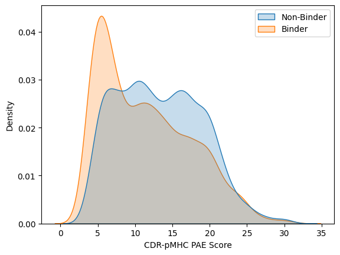
[ ]:
fig, (ax1, ax2) = plt.subplots(1, 2, figsize=(10, 5))
ax1.set_title('Binder')
pg.qqplot(confidence_scores[confidence_scores['type'] == 'Binder']['cdr_pmhc_pae_score'], ax=ax1)
ax2.set_title('Non-Binder')
pg.qqplot(confidence_scores[confidence_scores['type'] == 'Non-Binder']['cdr_pmhc_pae_score'], ax=ax2)
plt.show()
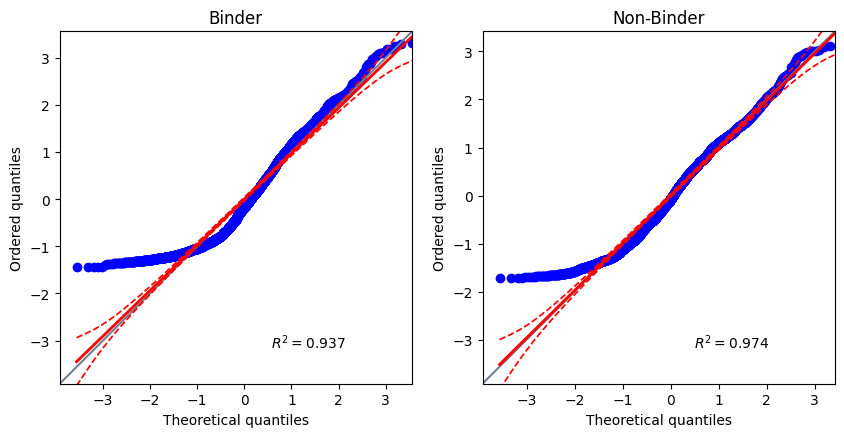
[8]:
rng = np.random.default_rng(seed=SEED)
original_roc_auc_scores = []
for _ in range(NUM_SAMPLES):
sample = confidence_scores.sample(SAMPLE_SIZE, random_state=rng)
original_roc_auc_scores.append(1 - roc_auc_score(sample['label'], sample['cdr_pmhc_pae_score']))
Untrained Aggregator Model
[9]:
untrained_predictions = pd.read_csv('../data/processed/af3_af3_tcrmodel2_pae_aggregator_predictions_untrained.csv')
untrained_predictions = untrained_predictions.rename({'prediction': 'untrained_prediction'}, axis='columns')
[ ]:
confidence_scores = confidence_scores.merge(untrained_predictions, how='left', on=['name', 'seed', 'sample'])
[ ]:
ax = sns.kdeplot(x=confidence_scores['untrained_prediction'], hue=confidence_scores['type'], fill=True, clip=(0, 1))
ax.set_xlabel('Untrained PAE Aggregator')
legend = ax.get_legend()
legend.set_title(None)
print('ROC-AUC:', roc_auc_score(confidence_scores['label'], confidence_scores['untrained_prediction']))
plt.show()
ROC-AUC: 0.6003218133333332
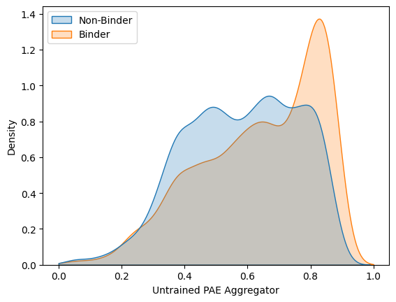
[ ]:
fig, (ax1, ax2) = plt.subplots(1, 2, figsize=(10, 5))
ax1.set_title('Binder')
pg.qqplot(confidence_scores[confidence_scores['type'] == 'Binder']['untrained_prediction'], ax=ax1)
ax2.set_title('Non-Binder')
pg.qqplot(confidence_scores[confidence_scores['type'] == 'Non-Binder']['untrained_prediction'], ax=ax2)
plt.show()
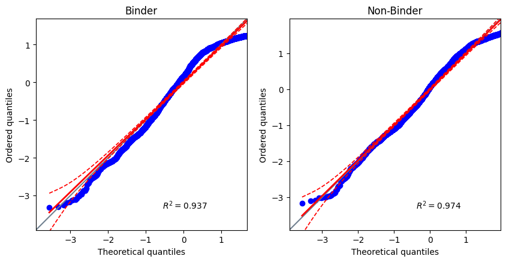
[13]:
rng = np.random.default_rng(seed=SEED)
untrained_roc_auc_scores = []
for _ in range(NUM_SAMPLES):
sample = confidence_scores.sample(SAMPLE_SIZE, random_state=rng)
untrained_roc_auc_scores.append(roc_auc_score(sample['label'], sample['untrained_prediction']))
Trained Aggregator
[14]:
trained_predictions = pd.read_csv('../data/processed/af3_af3_tcrmodel2_pae_aggregator_predictions_trained.csv')
trained_predictions = trained_predictions.rename({'prediction': 'trained_prediction'}, axis='columns')
[15]:
confidence_scores = confidence_scores.merge(trained_predictions, how='left', on=['name', 'seed', 'sample'])
[ ]:
ax = sns.kdeplot(x=confidence_scores['trained_prediction'], hue=confidence_scores['type'], fill=True, clip=(0, 1))
ax.set_xlabel('Trained PAE Aggregator')
legend = ax.get_legend()
legend.set_title(None)
print('ROC-AUC:', roc_auc_score(confidence_scores['label'], confidence_scores['trained_prediction']))
plt.show()
ROC-AUC: 0.5942759822222221
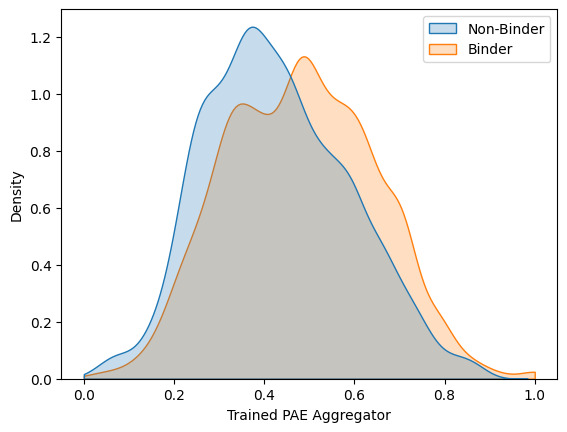
[ ]:
fig, (ax1, ax2) = plt.subplots(1, 2, figsize=(10, 5))
ax1.set_title('Binder')
pg.qqplot(confidence_scores[confidence_scores['type'] == 'Binder']['trained_prediction'], ax=ax1)
ax2.set_title('Non-Binder')
pg.qqplot(confidence_scores[confidence_scores['type'] == 'Non-Binder']['trained_prediction'], ax=ax2)
plt.show()
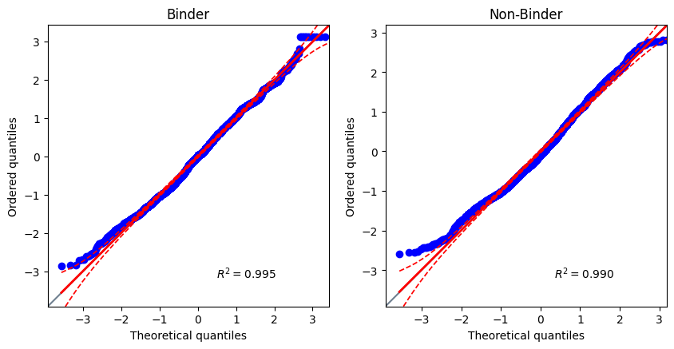
[18]:
rng = np.random.default_rng(seed=SEED)
trained_roc_auc_scores = []
for _ in range(NUM_SAMPLES):
sample = confidence_scores.sample(SAMPLE_SIZE, random_state=rng)
trained_roc_auc_scores.append(roc_auc_score(sample['label'], sample['trained_prediction']))
Investigating learned weights
[19]:
num_folds = 5
trained_predictions = pd.DataFrame()
weights = []
for fold in range(1, num_folds + 1):
model = PAEAggregator(3040)
model.load_state_dict(
torch.load(
f'../models/PAEAggregator_af3_af3_tcrmodel2/model_{fold}.pt',
weights_only=True,
map_location=torch.device('cpu'),
),
)
weights.append(model.weights.cpu().detach().numpy())
weights = np.array(weights)
[20]:
differences = np.zeros((num_folds, num_folds))
for i, j in itertools.combinations(range(num_folds), 2):
differences[i][j] = np.sqrt(np.sum((weights[i] - weights[j]) ** 2))
differences = np.maximum(differences, differences.T)
ax = sns.heatmap(differences, xticklabels=list(range(1, num_folds + 1)), yticklabels=list(range(1, num_folds + 1)))
ax.set_title('Difference in weights for each training fold', fontsize=14)
ax.collections[0].colorbar.set_label('Euclidean Distance', fontsize=12)
ax.set_xlabel('Fold', fontsize=12)
ax.set_ylabel('Fold', fontsize=12)
plt.show()
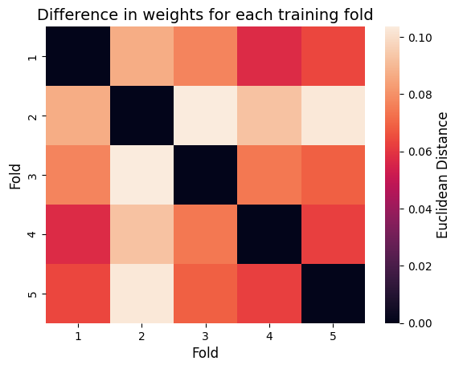
[21]:
cdr_1a_length = 8
cdr_2a_length = 8
cdr_3a_length = 24
cdr_1b_length = 8
cdr_2b_length = 8
cdr_3b_length = 24
mhc_pseudo_length = 26
peptide_length = 12
column_labels = np.repeat(
np.array(['cdr_1a', 'cdr_2a', 'cdr_3a', 'cdr_1b', 'cdr_2b', 'cdr_3b']),
np.array([cdr_1a_length, cdr_2a_length, cdr_3a_length, cdr_1b_length, cdr_2b_length, cdr_3b_length]),
)
row_labels = np.repeat(np.array(['mhc_pseudo', 'peptide']), np.array([mhc_pseudo_length, peptide_length]))
rows, cols = np.meshgrid(row_labels, column_labels)
labels = np.char.add(cols, '-')
labels = np.char.add(labels, rows)
labels = labels.flatten()
[22]:
colour_cycle = rcParams['axes.prop_cycle'].by_key()['color']
label_to_colour = {label: colour_cycle[i % len(colour_cycle)] for i, label in enumerate(np.unique(labels))}
colours = np.vectorize(label_to_colour.get)(labels)
[23]:
fig, axes = plt.subplots(num_folds, 1, figsize=(10, num_folds * 5), constrained_layout=True)
fig.suptitle('Learned aggregation weight for each position in the PAE matrix')
for i in range(num_folds):
axes[i].set_title(f'Fold {i + 1}')
axes[i].bar(range(1, weights[i].shape[0] + 1), weights[i], color=colours)
handles = [Patch(facecolor=color, label=label) for label, color in label_to_colour.items()]
axes[i].legend(handles=handles, bbox_to_anchor=(1.05, 1), loc='upper left')
plt.show()
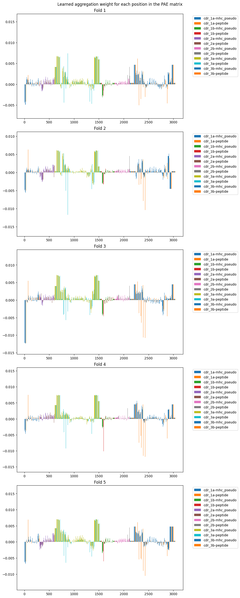
[24]:
plt.title('Learned aggregation weight for each position in the PAE matrix (averaged over folds)')
plt.bar(range(1, weights.shape[-1] + 1), np.mean(weights, axis=0), color=colours)
handles = [Patch(facecolor=color, label=label) for label, color in label_to_colour.items()]
plt.legend(handles=handles, bbox_to_anchor=(1.05, 1), loc='upper left')
plt.show()
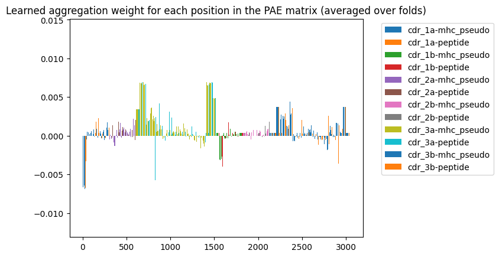
[25]:
ax = sns.boxplot(x=labels, y=np.mean(weights, axis=0))
ax.axhline(1 / weights.shape[-1], color='black', linestyle='dashed')
ax.set_xticks(ax.get_xticks())
ax.set_xticklabels(ax.get_xticklabels(), rotation=270)
plt.show()
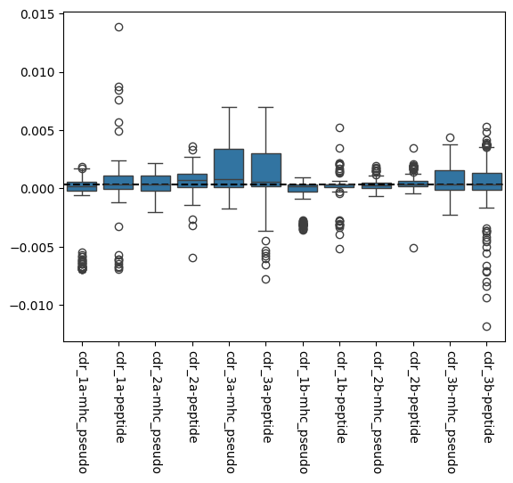
[26]:
unique_labels = np.unique(labels)
fig, axes = plt.subplots(2, len(unique_labels) // 2, figsize=((len(unique_labels) // 2) * 5, 10))
weights_avg = np.mean(weights, axis=0)
x_min = np.min(weights_avg)
x_max = np.max(weights_avg)
for i, label in enumerate(unique_labels):
row = 0 if 'peptide' in label else 1
col = i // 2
axes[row, col].set_title(label)
axes[row, col].hist(weights_avg[labels == label], range=(x_min, x_max))
plt.show()
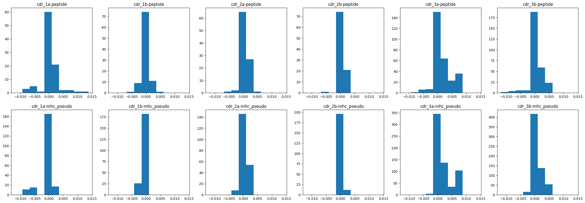
[27]:
groups = [(label, weights_avg[labels == label]) for label in unique_labels]
print(stats.f_oneway(*[values for _, values in groups]))
print()
print('Post-hoc:')
print(' Stat P-value Significant?')
adj_alpha_level = 0.05 / len(groups)
for (label1, group1), (label2, group2) in itertools.combinations(groups, 2):
stat, p_value = stats.ttest_ind(group1, group2)
print(f'{label1: <17} - {label2: <20} {stat:6.2f} {p_value:10.2e} {p_value < adj_alpha_level}')
F_onewayResult(statistic=41.08130025017443, pvalue=1.4241305798996728e-83)
Post-hoc:
Stat P-value Significant?
cdr_1a-mhc_pseudo - cdr_1a-peptide -3.04 2.58e-03 True
cdr_1a-mhc_pseudo - cdr_1b-mhc_pseudo -1.42 1.56e-01 False
cdr_1a-mhc_pseudo - cdr_1b-peptide -2.49 1.33e-02 False
cdr_1a-mhc_pseudo - cdr_2a-mhc_pseudo -5.05 6.72e-07 True
cdr_1a-mhc_pseudo - cdr_2a-peptide -4.37 1.73e-05 True
cdr_1a-mhc_pseudo - cdr_2b-mhc_pseudo -5.14 4.31e-07 True
cdr_1a-mhc_pseudo - cdr_2b-peptide -4.25 2.88e-05 True
cdr_1a-mhc_pseudo - cdr_3a-mhc_pseudo -12.17 1.79e-31 True
cdr_1a-mhc_pseudo - cdr_3a-peptide -8.81 2.18e-17 True
cdr_1a-mhc_pseudo - cdr_3b-mhc_pseudo -9.77 2.10e-21 True
cdr_1a-mhc_pseudo - cdr_3b-peptide -4.51 8.08e-06 True
cdr_1a-peptide - cdr_1b-mhc_pseudo 2.95 3.39e-03 True
cdr_1a-peptide - cdr_1b-peptide 0.93 3.51e-01 False
cdr_1a-peptide - cdr_2a-mhc_pseudo 0.35 7.24e-01 False
cdr_1a-peptide - cdr_2a-peptide -0.45 6.51e-01 False
cdr_1a-peptide - cdr_2b-mhc_pseudo 0.55 5.82e-01 False
cdr_1a-peptide - cdr_2b-peptide -0.27 7.89e-01 False
cdr_1a-peptide - cdr_3a-mhc_pseudo -5.16 3.19e-07 True
cdr_1a-peptide - cdr_3a-peptide -3.35 8.75e-04 True
cdr_1a-peptide - cdr_3b-mhc_pseudo -1.91 5.63e-02 False
cdr_1a-peptide - cdr_3b-peptide 0.15 8.77e-01 False
cdr_1b-mhc_pseudo - cdr_1b-peptide -2.52 1.24e-02 False
cdr_1b-mhc_pseudo - cdr_2a-mhc_pseudo -6.07 2.94e-09 True
cdr_1b-mhc_pseudo - cdr_2a-peptide -5.79 1.78e-08 True
cdr_1b-mhc_pseudo - cdr_2b-mhc_pseudo -6.95 1.47e-11 True
cdr_1b-mhc_pseudo - cdr_2b-peptide -5.93 8.14e-09 True
cdr_1b-mhc_pseudo - cdr_3a-mhc_pseudo -11.91 2.67e-30 True
cdr_1b-mhc_pseudo - cdr_3a-peptide -8.96 6.92e-18 True
cdr_1b-mhc_pseudo - cdr_3b-mhc_pseudo -9.85 1.02e-21 True
cdr_1b-mhc_pseudo - cdr_3b-peptide -4.02 6.71e-05 True
cdr_1b-peptide - cdr_2a-mhc_pseudo -1.71 8.89e-02 False
cdr_1b-peptide - cdr_2a-peptide -2.36 1.95e-02 False
cdr_1b-peptide - cdr_2b-mhc_pseudo -1.84 6.66e-02 False
cdr_1b-peptide - cdr_2b-peptide -2.30 2.22e-02 False
cdr_1b-peptide - cdr_3a-mhc_pseudo -6.72 3.68e-11 True
cdr_1b-peptide - cdr_3a-peptide -4.86 1.69e-06 True
cdr_1b-peptide - cdr_3b-mhc_pseudo -4.36 1.48e-05 True
cdr_1b-peptide - cdr_3b-peptide -1.16 2.47e-01 False
cdr_2a-mhc_pseudo - cdr_2a-peptide -1.75 8.06e-02 False
cdr_2a-mhc_pseudo - cdr_2b-mhc_pseudo 0.50 6.15e-01 False
cdr_2a-mhc_pseudo - cdr_2b-peptide -1.44 1.51e-01 False
cdr_2a-mhc_pseudo - cdr_3a-mhc_pseudo -8.61 3.60e-17 True
cdr_2a-mhc_pseudo - cdr_3a-peptide -6.00 3.87e-09 True
cdr_2a-mhc_pseudo - cdr_3b-mhc_pseudo -4.19 3.10e-05 True
cdr_2a-mhc_pseudo - cdr_3b-peptide -0.23 8.17e-01 False
cdr_2a-peptide - cdr_2b-mhc_pseudo 2.66 8.18e-03 False
cdr_2a-peptide - cdr_2b-peptide 0.40 6.91e-01 False
cdr_2a-peptide - cdr_3a-mhc_pseudo -5.00 7.35e-07 True
cdr_2a-peptide - cdr_3a-peptide -3.30 1.07e-03 True
cdr_2a-peptide - cdr_3b-mhc_pseudo -1.35 1.78e-01 False
cdr_2a-peptide - cdr_3b-peptide 0.84 4.04e-01 False
cdr_2b-mhc_pseudo - cdr_2b-peptide -2.61 9.53e-03 False
cdr_2b-mhc_pseudo - cdr_3a-mhc_pseudo -8.96 2.05e-18 True
cdr_2b-mhc_pseudo - cdr_3a-peptide -6.38 4.13e-10 True
cdr_2b-mhc_pseudo - cdr_3b-mhc_pseudo -4.79 1.98e-06 True
cdr_2b-mhc_pseudo - cdr_3b-peptide -0.48 6.30e-01 False
cdr_2b-peptide - cdr_3a-mhc_pseudo -5.29 1.62e-07 True
cdr_2b-peptide - cdr_3a-peptide -3.58 3.84e-04 True
cdr_2b-peptide - cdr_3b-mhc_pseudo -1.83 6.78e-02 False
cdr_2b-peptide - cdr_3b-peptide 0.57 5.68e-01 False
cdr_3a-mhc_pseudo - cdr_3a-peptide 1.98 4.80e-02 False
cdr_3a-mhc_pseudo - cdr_3b-mhc_pseudo 9.65 2.79e-21 True
cdr_3a-mhc_pseudo - cdr_3b-peptide 8.79 7.45e-18 True
cdr_3a-peptide - cdr_3b-mhc_pseudo 5.50 5.05e-08 True
cdr_3a-peptide - cdr_3b-peptide 5.62 3.04e-08 True
cdr_3b-mhc_pseudo - cdr_3b-peptide 3.35 8.36e-04 True
Comparison
[ ]:
fig, ax = plt.subplots(1, 1)
sns.stripplot(
data=[original_roc_auc_scores, untrained_roc_auc_scores, trained_roc_auc_scores], color='grey', ax=ax, zorder=1
)
sns.boxplot(
data=[original_roc_auc_scores, untrained_roc_auc_scores, trained_roc_auc_scores],
ax=ax,
color='tab:blue',
boxprops={'alpha': 0.75},
zorder=2,
)
ax.axhline(0.5, color='red', linestyle='dashed')
ax.set_xticks(ax.get_xticks())
ax.set_xticklabels(['Original', 'Untrained', 'Trained'])
ax.set_ylim([0.4, 1.0])
ax.set_ylabel('ROC-AUC Score', fontsize=12)
plt.show()
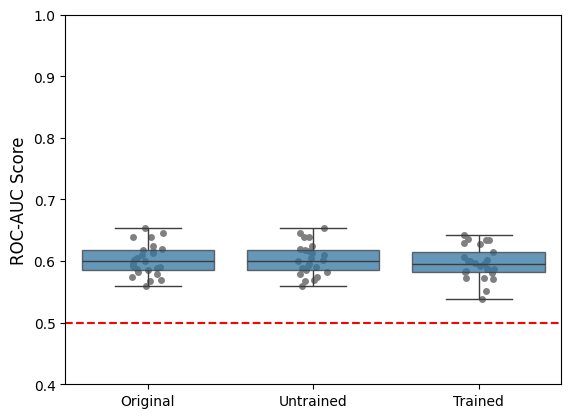
[29]:
fig, axes = plt.subplots(1, 3, figsize=(12, 5))
for ax, roc_auc_scores in zip(
axes, [original_roc_auc_scores, untrained_roc_auc_scores, trained_roc_auc_scores], strict=True
):
sns.histplot(roc_auc_scores, ax=ax)
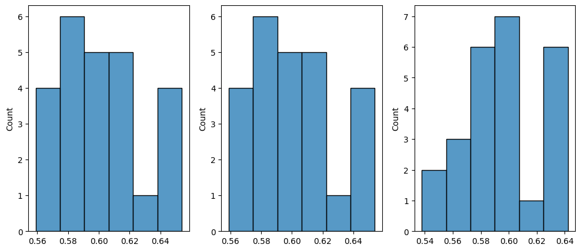
[30]:
print(stats.kruskal(original_roc_auc_scores, untrained_roc_auc_scores, trained_roc_auc_scores))
combinations = list(
itertools.combinations(
(
('Original', original_roc_auc_scores),
('Untrained', untrained_roc_auc_scores),
('Trained', trained_roc_auc_scores),
),
2,
)
)
adj_alpha_level = SIGNIFICANCE_LEVEL / len(combinations)
print()
print('Post-hoc:')
for (label1, group1), (label2, group2) in combinations:
stat, p_val = stats.ranksums(group1, group2)
print(f'{label1: <15}{label2: <15}{stat: .2f} {p_val: .2e} significant? {p_val < adj_alpha_level}')
KruskalResult(statistic=0.5337718724215071, pvalue=0.7657604120183317)
Post-hoc:
Original Untrained -0.01 9.92e-01 significant? False
Original Trained 0.63 5.28e-01 significant? False
Untrained Trained 0.63 5.28e-01 significant? False